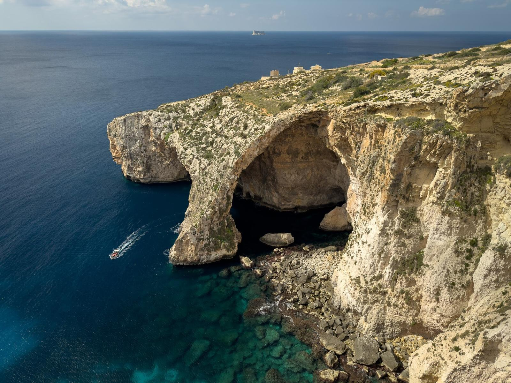
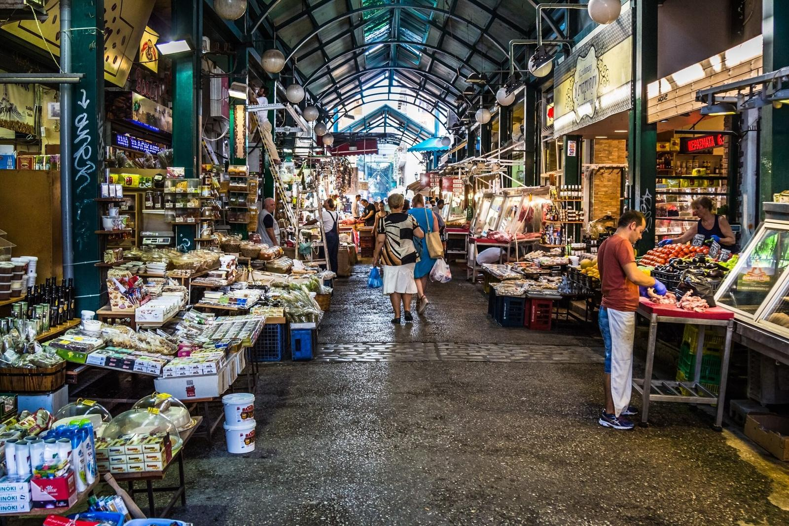

{{SITE}}
carnet de voyage · {{YEAR}}


Trois mois, un sac à dos, et pas de plan.
Je suis parti·e au printemps avec une carte froissée et l'envie de prendre les routes qui ne mènent nulle part. Ce carnet garde ce que j'ai vu : des villes qui s'allument, des falaises, des marchés qui sentent le cumin, et des gens qui m'ont ouvert leur porte.
Les pages s'ajoutent au fil des étapes. Bonne lecture, et bon voyage à vous aussi.
— {{SITE}}
 0,95 €
0,95 €Les dernières étapes

Le bout du monde
12 avril · la côte sauvage

Le marché couvert
27 avril · épices et thé à la menthe

La route du littoral
9 mai · cent kilomètres de virages
« Le voyage est la seule chose qu'on achète et qui nous rend plus riche. »— noté sur un mur, quelque part